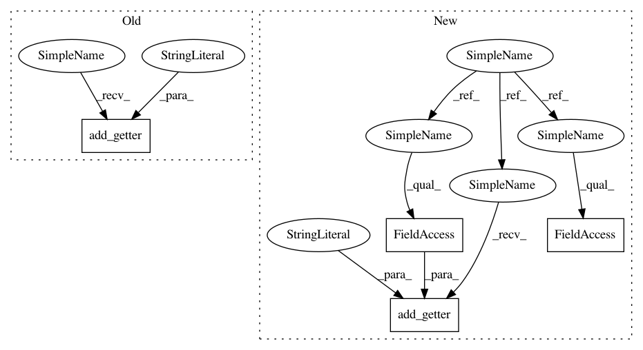

a2a558fc6c1e4b4308e130c77c31816564de7c3a,chainercv/datasets/ade20k/ade20k_semantic_segmentation_dataset.py,ADE20KSemanticSegmentationDataset,__init__,#ADE20KSemanticSegmentationDataset#Any#Any#,44
Before Change
self.label_paths = sorted(glob.glob(os.path.join(label_dir, "*.png")))
self.add_getter("img", lambda i: read_image(self.img_paths[i]))
self.add_getter("iabel", lambda i: read_image(
self.label_paths[i], dtype=np.int32, color=False)[0])
def __len__(self):
return len(self.img_paths)
After Change
":math:`[0, \//class - 1]`"
def __init__(self, data_dir="auto", split="train"):
super(ADE20KSemanticSegmentationDataset, self).__init__()
if data_dir is "auto":
data_dir = get_ade20k(root, url)
if split == "train" or split == "val":
img_dir = os.path.join(
data_dir, "ADEChallengeData2016", "images",
"training" if split == "train" else "validation")
label_dir = os.path.join(
data_dir, "ADEChallengeData2016", "annotations",
"training" if split == "train" else "validation")
else:
raise ValueError(
"Please give \"split\" argument with either \"train\" or "
"\"val\".")
self.img_paths = sorted(glob.glob(os.path.join(img_dir, "*.jpg")))
self.label_paths = sorted(glob.glob(os.path.join(label_dir, "*.png")))
self.add_getter("img", self._get_image)
self.add_getter("label", self._get_label)
def __len__(self):
return len(self.img_paths)
In pattern: SUPERPATTERN
Frequency: 4
Non-data size: 4
Instances
Project Name: chainer/chainercv
Commit Name: a2a558fc6c1e4b4308e130c77c31816564de7c3a
Time: 2018-06-20
Author: yuyuniitani@gmail.com
File Name: chainercv/datasets/ade20k/ade20k_semantic_segmentation_dataset.py
Class Name: ADE20KSemanticSegmentationDataset
Method Name: __init__
Project Name: chainer/chainercv
Commit Name: a2a558fc6c1e4b4308e130c77c31816564de7c3a
Time: 2018-06-20
Author: yuyuniitani@gmail.com
File Name: chainercv/datasets/ade20k/ade20k_semantic_segmentation_dataset.py
Class Name: ADE20KSemanticSegmentationDataset
Method Name: __init__
Project Name: chainer/chainercv
Commit Name: a2a558fc6c1e4b4308e130c77c31816564de7c3a
Time: 2018-06-20
Author: yuyuniitani@gmail.com
File Name: chainercv/datasets/online_products/online_products_dataset.py
Class Name: OnlineProductsDataset
Method Name: __init__
Project Name: chainer/chainercv
Commit Name: a263992a8595227f4cb94a6cfe4c89c7d8854db9
Time: 2018-06-20
Author: yuyuniitani@gmail.com
File Name: chainercv/datasets/online_products/online_products_dataset.py
Class Name: OnlineProductsDataset
Method Name: __init__
Project Name: chainer/chainercv
Commit Name: a263992a8595227f4cb94a6cfe4c89c7d8854db9
Time: 2018-06-20
Author: yuyuniitani@gmail.com
File Name: chainercv/datasets/ade20k/ade20k_semantic_segmentation_dataset.py
Class Name: ADE20KSemanticSegmentationDataset
Method Name: __init__